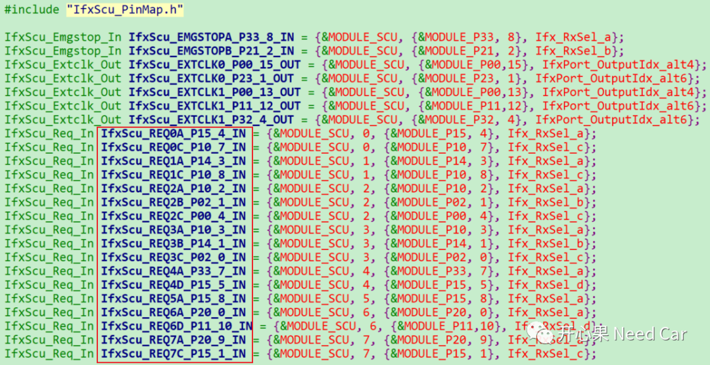
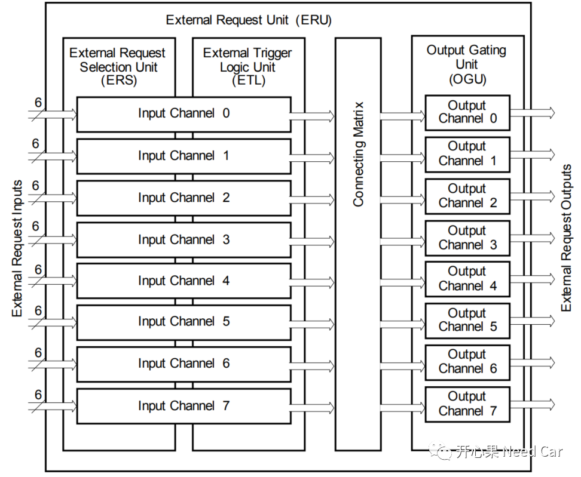
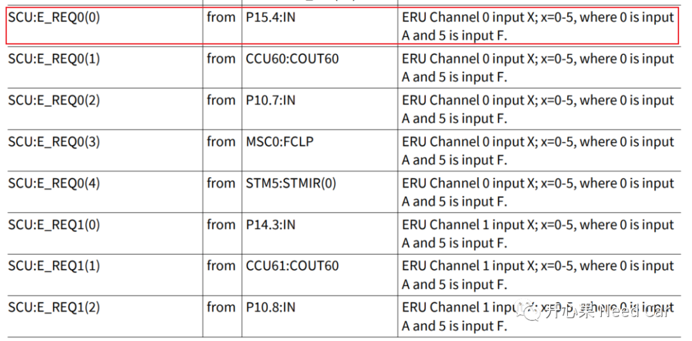
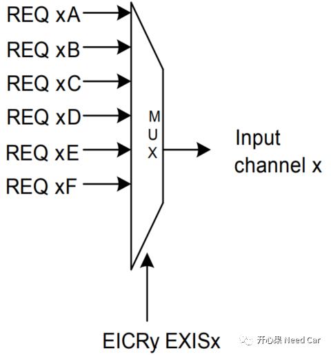
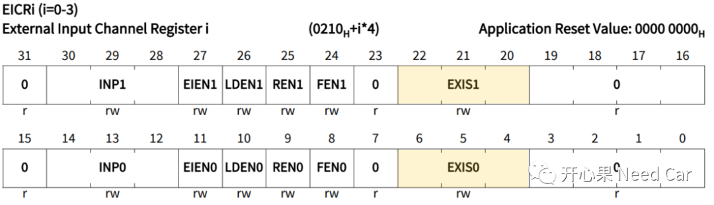
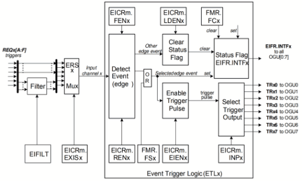
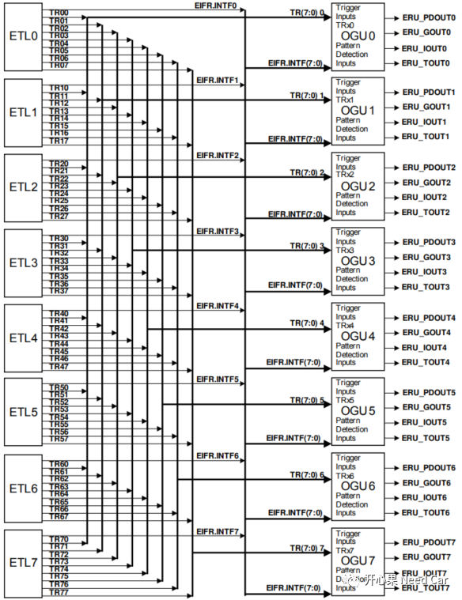
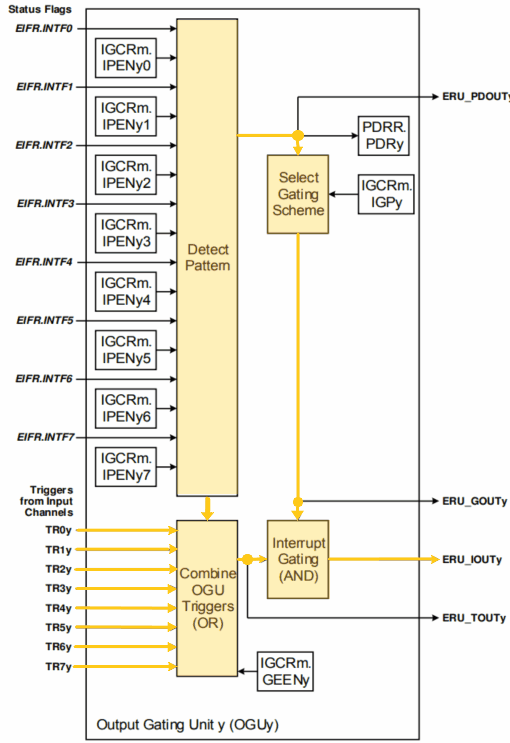
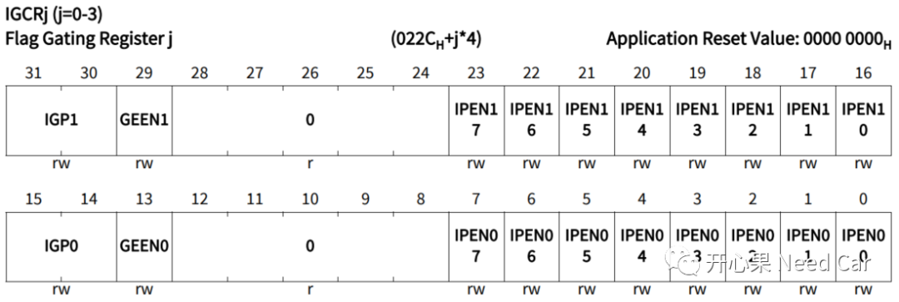

开心果 Need Car · 2022-01-31T17:29:00+08:00 · 微信原文
嵌入式开发，了解使用的芯片是很有必要的，如果能了解使用的芯片对我们设计和解决问题大有裨益。本文开始撸TC397的外部中断，给你讲透外部中断怎么用。
本文学习参考教程链接：
https://www.infineon.com/cms/en/product/promopages/aurix-expert-training/?redirId=118978
ERU具体参考的示例链接：
https://www.infineon.com/dgdl/Infineon-ERU_Interrupt_1_KIT_TC397_TFT-Training-v01_02-EN.pdf?fileId=5546d4627883d7e00178a2d63d17391d
AURIX TC397或者其它系列模块的学习均可在上述链接中找到，如果觉得有用，请分享给更多的汽车人，大家一起聊聊汽车嵌入式开发那点事。
说外部中断，其实主要是谈SCU(System Control Units)的外部请求单元ERU(External Request Unit)。首先我们需要清楚，一个芯片的引脚毕竟是有限的，不可能全部用来请求外部中断，因此在PCB设计之初就应考虑好哪些Pin用来作为外部中断触发源。
比如我们讨论的TC397，外部直接输入端口也就17个可以作为直接外部触发源，当然，给到ERU的输入还有其它模块的输入信号（也是有限的）。在库文件IfxScu_PinMap.h中可以一目了然的知道直接外部请求端口有哪些，如下所示：


ERS(External Request Selector Unit )



ETL(Event Trigger Logic )

Connecting Matrix

OGU(Output Gating Unit )


IFX_ALIGN(4) IfxCpu_syncEvent cpuSyncEvent= 0;typedef struct{IfxScu_Req_In *reqPin; /* External request pin */IfxScuEru_InputChannel inputChannel; /* Input channel EICRm depending on input pin */IfxScuEru_InputNodePointer triggerSelect; /* Input node pointer */IfxScuEru_OutputChannel outputChannel; /* Output channel */volatile Ifx_SRC_SRCR *src; /* Service request register */} ERUconfig;ERUconfig g_ERUconfig;void core0_main (void){IfxCpu_enableInterrupts();/** !!WATCHDOG0 AND SAFETY WATCHDOG ARE DISABLED HERE!!* Enable the watchdog in the demo if it is required and also service the watchdog periodically* */IfxScuWdt_disableCpuWatchdog (IfxScuWdt_getCpuWatchdogPassword ());IfxScuWdt_disableSafetyWatchdog (IfxScuWdt_getSafetyWatchdogPassword ());/* Cpu sync event wait*/IfxCpu_emitEvent(&cpuSyncEvent);IfxCpu_waitEvent(&cpuSyncEvent, 1);IfxPort_setPinMode(TRIGGER_PIN, IfxPort_Mode_outputPushPullGeneral);IfxPort_setPinState(TRIGGER_PIN, IfxPort_State_high);/* Trigger pin */g_ERUconfig.reqPin = REQ_IN;/* Initialize this pin with pull-down enabled* This function will also configure the input multiplexers of the ERU (Register EXISx)*/IfxScuEru_initReqPin(g_ERUconfig.reqPin, IfxPort_InputMode_pullDown);/* Determine input channel depending on input pin */g_ERUconfig.inputChannel = (IfxScuEru_InputChannel) g_ERUconfig.reqPin->channelId;/* Input channel configuration */IfxScuEru_enableRisingEdgeDetection(g_ERUconfig.inputChannel); /* Interrupt triggers on rising edge (Register RENx) and */IfxScuEru_enableFallingEdgeDetection(g_ERUconfig.inputChannel); /* on falling edge (Register FENx) *//* Signal destination */g_ERUconfig.outputChannel = IfxScuEru_OutputChannel_0; /* OGU channel 0 *//* Event from input ETL0 triggers output OGU0 (signal TRx0) */g_ERUconfig.triggerSelect = IfxScuEru_InputNodePointer_0;/* Get source pointer depending on outputChannel (SRC_SCUERU0 for outputChannel0) */g_ERUconfig.src = &MODULE_SRC.SCU.SCUERU[0];/* Connecting Matrix, Event Trigger Logic ETL block *//* Enable generation of trigger event (Register EIENx) */IfxScuEru_enableTriggerPulse(g_ERUconfig.inputChannel);/* Determination of output channel for trigger event (Register INPx) */IfxScuEru_connectTrigger(g_ERUconfig.inputChannel, g_ERUconfig.triggerSelect);/* Configure Output channels, OutputGating Unit OGU (Register IGPy) */IfxScuEru_setInterruptGatingPattern(g_ERUconfig.outputChannel, IfxScuEru_InterruptGatingPattern_alwaysActive);IfxSrc_init(g_ERUconfig.src, IfxSrc_Tos_cpu0, 6);IfxSrc_enable(g_ERUconfig.src);while (1){IfxPort_setPinState(TRIGGER_PIN, IfxPort_State_toggled);}}IFX_INTERRUPT(Per_IntHandle, CPU0_INT_VECTOR_TABLE_NUM, PER_PRI_NUM_6);void Per_IntHandle(void){/* interrupt handle */}
往期精彩回顾